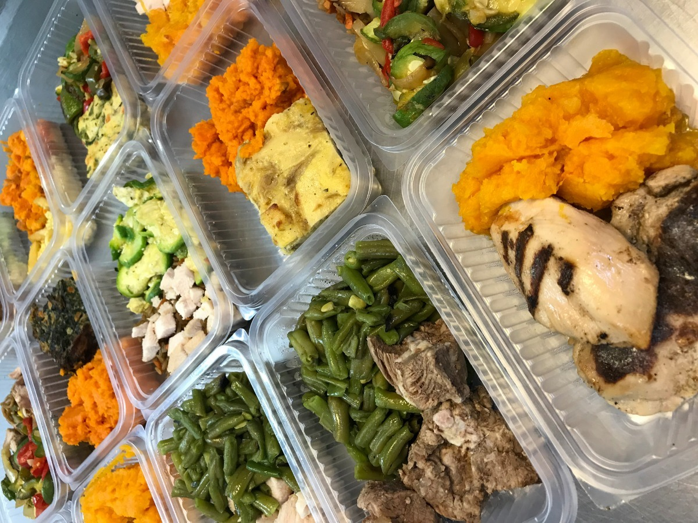

MUNDO SALUDABLE
Los buenos hábitos de salud pueden permitirle evitar una enfermedad y mejorar su calidad de vida. Las siguientes medidas le ayudarán a sentirse y vivir mejor:
- Hacer ejercicio en forma regular y controlar el peso.
- No fumar.
- No tomar mucho alcohol y evitarlo por completo en caso de tener antecedentes de alcoholismo.
- Utilizar las medicinas recetadas por su proveedor de atención médica según las instrucciones.
- Consumir una dieta saludable y equilibrada.
EJERCICIOS
El ejercicio es un factor clave para mantenerse saludable. El ejercicio fortalece los huesos, el corazón y los pulmones, tonifica los músculos, mejora la vitalidad, alivia la depresión y ayuda a conciliar mejor el sueño. Hable con su proveedor antes de comenzar un programa de ejercicios si tiene problemas de salud como obesidad, hipertensión o diabetes. Esto ayuda a garantizar que el ejercicio sea seguro y que usted le saque el mejor provecho.
Realizar de forma regular y sistemática una actividad física ha demostrado ser una práctica muy beneficiosa en la prevención, desarrollo y rehabilitación de la salud, a la vez que ayuda al carácter, la disciplina y a la toma de decisiones en la vida cotidiana.
El ejercicio físico, ya sea de corta o larga duración, contribuye a establecer un bienestar mental, mejorando la autonomía de la persona, la memoria, rapidez de ideas, etcétera, y promoviendo sensaciones como el optimismo o la euforia, al tiempo que se mejora la autoestima de las personas, lo que produce beneficios en diferentes enfermedades como la osteoporosis, la hipertensión o las crisis diabéticas.
BENEFICIOS BIOLÓGICOS
Las mujeres embarazadas no deben tomar ningún fármaco o medicina sin consultar con el médico, ni siquiera las medicinas de venta libre. El feto es más sensible al daño de las drogas durante los primeros 3 meses. Coméntele a su proveedor si usted ha estado tomando cualquier droga antes de quedar embarazada. Siempre tome las medicinas en la forma como se las recetaron.
Tomar cualquier droga en una forma distinta a la recetada o tomar demasiado puede causar serios problemas de salud y se considera drogadicción.
| Mejora la forma y resistencia física. | Regula las cifras de presión arterial. | Incrementa o mantiene la densidad ósea. |
| Mejora la resistencia a la insulina. | Ayuda a mantener el peso corporal. | Aumenta el tono y la fuerza muscular. |
GALERÍA DE IMÁGENES


- Serie de estocada
- Serie de plancha
- Comida saludable
- Frutos secos
- Trote en el lugar
- Bícep sobre pelota